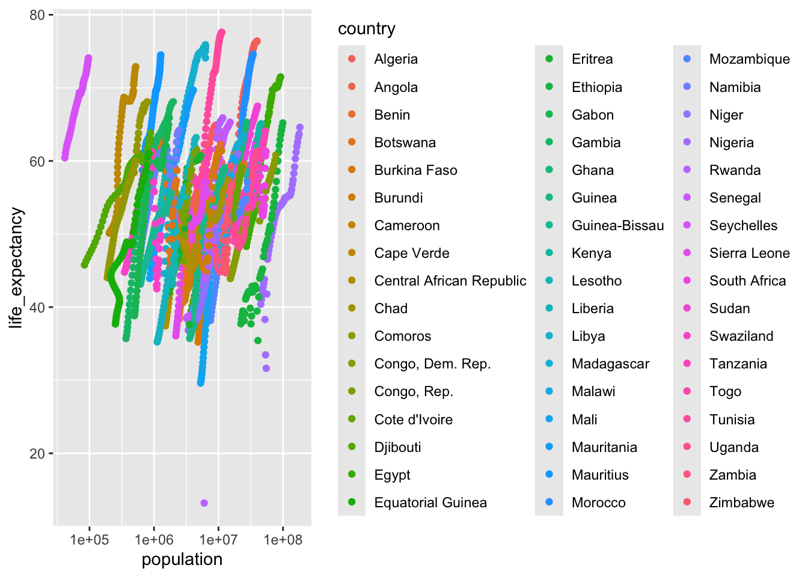
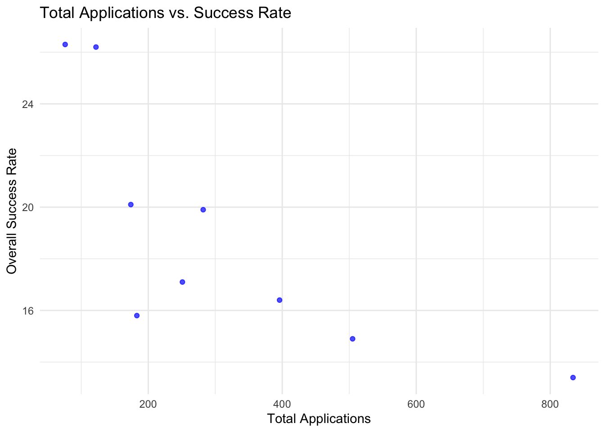
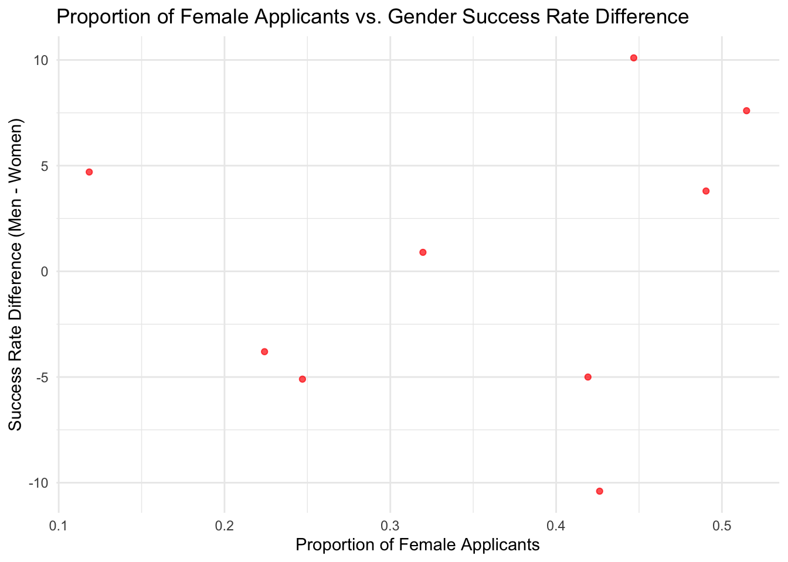

── Attaching core tidyverse packages ──────────────────────── tidyverse 2.0.0 ──
✔ dplyr 1.1.4 ✔ readr 2.1.5
✔ forcats 1.0.0 ✔ stringr 1.5.1
✔ ggplot2 3.5.1 ✔ tibble 3.2.1
✔ lubridate 1.9.4 ✔ tidyr 1.3.1
✔ purrr 1.0.2
── Conflicts ────────────────────────────────────────── tidyverse_conflicts() ──
✖ dplyr::filter() masks stats::filter()
✖ dplyr::lag() masks stats::lag()
ℹ Use the conflicted package (<http://conflicted.r-lib.org/>) to force all conflicts to become errors
library(dslabs)
Then, check out the package info and data.
help(gapminder)str(gapminder)
'data.frame': 10545 obs. of 9 variables:
$ country : Factor w/ 185 levels "Albania","Algeria",..: 1 2 3 4 5 6 7 8 9 10 ...
$ year : int 1960 1960 1960 1960 1960 1960 1960 1960 1960 1960 ...
$ infant_mortality: num 115.4 148.2 208 NA 59.9 ...
$ life_expectancy : num 62.9 47.5 36 63 65.4 ...
$ fertility : num 6.19 7.65 7.32 4.43 3.11 4.55 4.82 3.45 2.7 5.57 ...
$ population : num 1636054 11124892 5270844 54681 20619075 ...
$ gdp : num NA 1.38e+10 NA NA 1.08e+11 ...
$ continent : Factor w/ 5 levels "Africa","Americas",..: 4 1 1 2 2 3 2 5 4 3 ...
$ region : Factor w/ 22 levels "Australia and New Zealand",..: 19 11 10 2 15 21 2 1 22 21 ...
summary(gapminder)
country year infant_mortality life_expectancy
Albania : 57 Min. :1960 Min. : 1.50 Min. :13.20
Algeria : 57 1st Qu.:1974 1st Qu.: 16.00 1st Qu.:57.50
Angola : 57 Median :1988 Median : 41.50 Median :67.54
Antigua and Barbuda: 57 Mean :1988 Mean : 55.31 Mean :64.81
Argentina : 57 3rd Qu.:2002 3rd Qu.: 85.10 3rd Qu.:73.00
Armenia : 57 Max. :2016 Max. :276.90 Max. :83.90
(Other) :10203 NA's :1453
fertility population gdp continent
Min. :0.840 Min. :3.124e+04 Min. :4.040e+07 Africa :2907
1st Qu.:2.200 1st Qu.:1.333e+06 1st Qu.:1.846e+09 Americas:2052
Median :3.750 Median :5.009e+06 Median :7.794e+09 Asia :2679
Mean :4.084 Mean :2.701e+07 Mean :1.480e+11 Europe :2223
3rd Qu.:6.000 3rd Qu.:1.523e+07 3rd Qu.:5.540e+10 Oceania : 684
Max. :9.220 Max. :1.376e+09 Max. :1.174e+13
NA's :187 NA's :185 NA's :2972
region
Western Asia :1026
Eastern Africa : 912
Western Africa : 912
Caribbean : 741
South America : 684
Southern Europe: 684
(Other) :5586
class(gapminder) #data frame, nice, I can use tidyverse on it
[1] "data.frame"
africadata <- gapminder |>#pull out the African countries' datafilter(continent =="Africa")
Next, I start making smaller dataframes with only specific variables within them.
infants1 <- africadata |>#create object with just infant mortality and life expectancyselect(infant_mortality, life_expectancy)str(infants1) #its a data frame
'data.frame': 2907 obs. of 2 variables:
$ infant_mortality: num 148 208 187 116 161 ...
$ life_expectancy : num 47.5 36 38.3 50.3 35.2 ...
summary(infants1)
infant_mortality life_expectancy
Min. : 11.40 Min. :13.20
1st Qu.: 62.20 1st Qu.:48.23
Median : 93.40 Median :53.98
Mean : 95.12 Mean :54.38
3rd Qu.:124.70 3rd Qu.:60.10
Max. :237.40 Max. :77.60
NA's :226
population1 <- africadata |>#create object with just population and life expectancyselect(population, life_expectancy)str(population1) #its a data frame
'data.frame': 2907 obs. of 2 variables:
$ population : num 11124892 5270844 2431620 524029 4829291 ...
$ life_expectancy: num 47.5 36 38.3 50.3 35.2 ...
summary(population1)
population life_expectancy
Min. : 41538 Min. :13.20
1st Qu.: 1605232 1st Qu.:48.23
Median : 5570982 Median :53.98
Mean : 12235961 Mean :54.38
3rd Qu.: 13888152 3rd Qu.:60.10
Max. :182201962 Max. :77.60
NA's :51
I’ll make plots using ggplot. We can see that lower infant mortality is negatively correlated with higher life expectancy. Higher population is positively correlated with life expectancy. The data appears in “streaks” in both plots as this shows year by year data within each African country. I’ll add a second set of plots colored by country to show this more clearly.
Warning: Removed 51 rows containing missing values or values outside the scale range
(`geom_point()`).

missing_data <- africadata |>#by year, count number of NAs AKA missingsgroup_by(year) |>summarize(missing =sum(is.na(infant_mortality)))ggplot(data=missing_data, aes(x=year, y=missing)) +#make a bar plot to easily see when/where the NAs aregeom_col()
To avoid missingness, lets’ pull only rhe data from 2000.
africadata2000 <- africadata |>#pull out year 200 onlyfilter(year==2000)ggplot(data=africadata2000, aes(x=infant_mortality, y=life_expectancy, col=country)) +#make same plots as above, but only usiing year 2000geom_point()
Finally, I fit two simple linear models to the 2000 data, life expectency explained by infant mortality and then by population. Using alpha=0.05 as a cutoff, I will assume the null hypotheses to be each predictor is not associated with life expectancy. With a p-value of 2.83e-08, we reject the null hypothesis to conclude that infant moratlity is a significant predictor of life expectancy in African countries in 2000. With a p-value of 0.616, we fail to reject the null hypothesis to conlcude that population is not a significant predictor of life expectency in African countries in 2000.
Call:
lm(formula = life_expectancy ~ infant_mortality, data = africadata2000)
Residuals:
Min 1Q Median 3Q Max
-22.6651 -3.7087 0.9914 4.0408 8.6817
Coefficients:
Estimate Std. Error t value Pr(>|t|)
(Intercept) 71.29331 2.42611 29.386 < 2e-16 ***
infant_mortality -0.18916 0.02869 -6.594 2.83e-08 ***
---
Signif. codes: 0 '***' 0.001 '**' 0.01 '*' 0.05 '.' 0.1 ' ' 1
Residual standard error: 6.221 on 49 degrees of freedom
Multiple R-squared: 0.4701, Adjusted R-squared: 0.4593
F-statistic: 43.48 on 1 and 49 DF, p-value: 2.826e-08
summary(fit2)
Call:
lm(formula = life_expectancy ~ population, data = africadata2000)
Residuals:
Min 1Q Median 3Q Max
-18.429 -4.602 -2.568 3.800 18.802
Coefficients:
Estimate Std. Error t value Pr(>|t|)
(Intercept) 5.593e+01 1.468e+00 38.097 <2e-16 ***
population 2.756e-08 5.459e-08 0.505 0.616
---
Signif. codes: 0 '***' 0.001 '**' 0.01 '*' 0.05 '.' 0.1 ' ' 1
Residual standard error: 8.524 on 49 degrees of freedom
Multiple R-squared: 0.005176, Adjusted R-squared: -0.01513
F-statistic: 0.2549 on 1 and 49 DF, p-value: 0.6159
This section contributed by Mohammed Zuber
Loading and Checking Data
# help() function pulls up the help page for the data to see what it contains.help(research_funding_rates) # str () give us the overview of the datasetsstr(research_funding_rates)
# summary () gives summary of datasummary(research_funding_rates)
discipline applications_total applications_men applications_women
Length:9 Min. : 76.0 Min. : 67.0 Min. : 9
Class :character 1st Qu.:174.0 1st Qu.:105.0 1st Qu.: 39
Mode :character Median :251.0 Median :156.0 Median : 78
Mean :313.7 Mean :181.7 Mean :132
3rd Qu.:396.0 3rd Qu.:230.0 3rd Qu.:166
Max. :834.0 Max. :425.0 Max. :409
awards_total awards_men awards_women success_rates_total
Min. : 20.00 Min. :12.00 Min. : 2.00 Min. :13.4
1st Qu.: 32.00 1st Qu.:22.00 1st Qu.:10.00 1st Qu.:15.8
Median : 43.00 Median :30.00 Median :17.00 Median :17.1
Mean : 51.89 Mean :32.22 Mean :19.67 Mean :18.9
3rd Qu.: 65.00 3rd Qu.:38.00 3rd Qu.:29.00 3rd Qu.:20.1
Max. :112.00 Max. :65.00 Max. :47.00 Max. :26.3
success_rates_men success_rates_women
Min. :11.4 Min. :11.20
1st Qu.:15.3 1st Qu.:14.30
Median :18.8 Median :21.00
Mean :19.2 Mean :18.89
3rd Qu.:24.4 3rd Qu.:22.20
Max. :26.9 Max. :25.60
#class() function to check what type of object research_funding_rates isclass(research_funding_rates) # obtaining the type of object research_funding_rates is
[1] "data.frame"
Processing Data
# Filtering the research funding data (I am not subsetting any data since the dataset is already very small)fundingdata <- research_funding_rates # Getting an overview of the data structurestr(fundingdata)
discipline applications_total applications_men applications_women
Length:9 Min. : 76.0 Min. : 67.0 Min. : 9
Class :character 1st Qu.:174.0 1st Qu.:105.0 1st Qu.: 39
Mode :character Median :251.0 Median :156.0 Median : 78
Mean :313.7 Mean :181.7 Mean :132
3rd Qu.:396.0 3rd Qu.:230.0 3rd Qu.:166
Max. :834.0 Max. :425.0 Max. :409
awards_total awards_men awards_women success_rates_total
Min. : 20.00 Min. :12.00 Min. : 2.00 Min. :13.4
1st Qu.: 32.00 1st Qu.:22.00 1st Qu.:10.00 1st Qu.:15.8
Median : 43.00 Median :30.00 Median :17.00 Median :17.1
Mean : 51.89 Mean :32.22 Mean :19.67 Mean :18.9
3rd Qu.: 65.00 3rd Qu.:38.00 3rd Qu.:29.00 3rd Qu.:20.1
Max. :112.00 Max. :65.00 Max. :47.00 Max. :26.3
success_rates_men success_rates_women
Min. :11.4 Min. :11.20
1st Qu.:15.3 1st Qu.:14.30
Median :18.8 Median :21.00
Mean :19.2 Mean :18.89
3rd Qu.:24.4 3rd Qu.:22.20
Max. :26.9 Max. :25.60
# Load necessary packagelibrary(dplyr)# Create proportion_women_applicant and success rate differencefundingdata <- research_funding_rates %>%mutate(success_rate_difference = success_rates_men - success_rates_women, # Difference in success ratesproportion_women_applicants = applications_women / applications_total # Proportion of female applicants )# Check if the new variables existstr(fundingdata)
# Creating two new objects for further analysisfunding_variable_one <- fundingdata %>%select(applications_total, success_rates_total)# Obtaining the structure of funding_variable_onestr(funding_variable_one)
# Summarizing the details about funding_variable_onesummary(funding_variable_one)
applications_total success_rates_total
Min. : 76.0 Min. :13.4
1st Qu.:174.0 1st Qu.:15.8
Median :251.0 Median :17.1
Mean :313.7 Mean :18.9
3rd Qu.:396.0 3rd Qu.:20.1
Max. :834.0 Max. :26.3
# Creating another dataset with only two variables as listedfunding_variable_two <- fundingdata %>%select(proportion_women_applicants, success_rate_difference)# Obtaining the structure of funding_variable_twostr(funding_variable_two)
'data.frame': 9 obs. of 2 variables:
$ proportion_women_applicants: num 0.32 0.224 0.118 0.419 0.247 ...
$ success_rate_difference : num 0.9 -3.8 4.7 -5 -5.1 ...
# Obtaining the summary about the dataset funding_variable_twosummary(funding_variable_two)
proportion_women_applicants success_rate_difference
Min. :0.1184 Min. :-10.4000
1st Qu.:0.2470 1st Qu.: -5.0000
Median :0.4192 Median : 0.9000
Mean :0.3563 Mean : 0.3111
3rd Qu.:0.4468 3rd Qu.: 4.7000
Max. :0.5149 Max. : 10.1000
Plotting
Figure 1 Scatterplot of Total Applications vs. Success Rate
The scatterplot shows a negative trend, where disciplines with more applications tend to have lower success rates. Fields with fewer applications have higher success rates, possibly due to lower competition. In contrast, disciplines with over 500 applications see success rates drop below 15%, likely due to increased competition for limited funding. One outlier with 800+ applications and the lowest success rate suggests that some fields are highly competitive with stricter selection criteria.
# Scatterplot of Total Applications vs. Success Rateggplot(funding_variable_one, aes(x = applications_total, y = success_rates_total)) +geom_point(color ="blue", alpha =0.7) +labs(title ="Total Applications vs. Success Rate",x ="Total Applications",y ="Overall Success Rate" ) +theme_minimal()

Figure 2: Proportion of Female Applicants vs. Gender Success Rate Difference
The scatterplot shows no clear correlation between the proportion of female applicants and the gender success rate difference, as points are scattered across both positive and negative values. Some disciplines with higher female representation still exhibit gender disparities in success rates. In certain fields, men have a higher success rate, while in others, women do better, indicating variability across disciplines. This suggests that factors beyond applicant proportion, such as funding policies or selection criteria, may influence gender differences in research funding success.
#Scatterplot Proportion of Female Applicants vs. Gender Success Rate Differenceggplot(funding_variable_two, aes(x = proportion_women_applicants, y = success_rate_difference)) +geom_point(color ="red", alpha =0.7) +labs(title ="Proportion of Female Applicants vs. Gender Success Rate Difference",x ="Proportion of Female Applicants",y ="Success Rate Difference (Men - Women)" ) +theme_minimal()

Table 1: Top Disciplines Based on Total Applications
# Extracting the top disciplines based on total applicationstop_disciplines <- fundingdata %>%select(discipline, applications_total, awards_total, awards_men, awards_women) %>%arrange(desc(applications_total)) %>%# Sorting by total applicationshead(5) # Displaying top 5 disciplines# Print the summary tableprint(top_disciplines)
# Creating a bar plot for total awards by discipline ggplot(fundingdata, aes(x =reorder(discipline, awards_total), y = awards_total)) +geom_bar(stat ="identity", fill ="steelblue", color ="black") +labs(title ="Total Awards by Discipline",x ="Discipline",y ="Total Awards" ) +theme_minimal() +theme(axis.text.x =element_text(angle =45, hjust =1)) # Rotate text for better readability
Fitting a linear model
In the first model, the p-value is less than 0.05 (0.0197). Therefore, this suggests that the number of applications is a significant predictor of success rates. The negative coefficient (-0.0149) indicates that as the number of applications increases, the success rate decreases, likely due to increased competition. The R-squared of 0.564 means that 56.4% of the variation in success rates is explained by the number of applications.
In the second model, the p-value is greater than 0.05 (0.6013). Therefore, there is no strong statistical evidence to suggest that the proportion of female applicants is a significant predictor of the gender success rate difference. The R-squared of 0.041 means that only 4.1% of the variation in gender success rate differences is explained by the proportion of female applicants, which is weak.
# Linear model: Success Rate vs. Total Applicationsfit1 <-lm(success_rates_total ~ applications_total, data = fundingdata)# Linear model: Success Rate Difference vs. Proportion of Female Applicantsfit2 <-lm(success_rate_difference ~ proportion_women_applicants, data = fundingdata)# Summary of the modelsummary(fit1)
Call:
lm(formula = success_rates_total ~ applications_total, data = fundingdata)
Residuals:
Min 1Q Median 3Q Max
-5.0423 -1.2761 -0.8761 2.2346 4.4509
Coefficients:
Estimate Std. Error t value Pr(>|t|)
(Intercept) 23.562590 1.901882 12.389 5.13e-06 ***
applications_total -0.014865 0.004939 -3.009 0.0197 *
---
Signif. codes: 0 '***' 0.001 '**' 0.01 '*' 0.05 '.' 0.1 ' ' 1
Residual standard error: 3.309 on 7 degrees of freedom
Multiple R-squared: 0.564, Adjusted R-squared: 0.5018
F-statistic: 9.057 on 1 and 7 DF, p-value: 0.01968
summary(fit2)
Call:
lm(formula = success_rate_difference ~ proportion_women_applicants,
data = fundingdata)
Residuals:
Min 1Q Median 3Q Max
-11.4201 -4.3029 0.9603 5.6813 8.8712
Coefficients:
Estimate Std. Error t value Pr(>|t|)
(Intercept) -3.302 7.017 -0.471 0.652
proportion_women_applicants 10.140 18.534 0.547 0.601
Residual standard error: 7.118 on 7 degrees of freedom
Multiple R-squared: 0.041, Adjusted R-squared: -0.096
F-statistic: 0.2993 on 1 and 7 DF, p-value: 0.6013